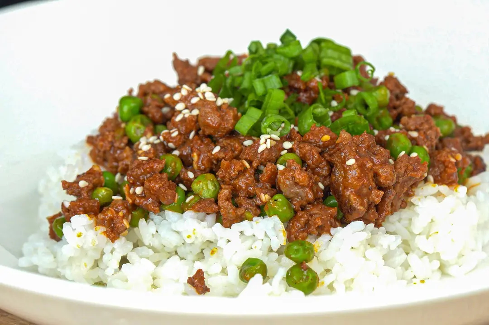

Gochujang Beef Bowl

Description
A simple high protein asian dish of beef and peas, with some spicy
korean flair.
Ingredients
Gochujang Beef
- Ground beef - 2 parts
- Green peas - 1 part
- Gochujang - 1/4 part
- Salt - a sprinkle
- Sesame oil - a drizzle
- Water - as needed
Serving Options
- Rice, cooked
- Scallions, thinly sliced
- Pickled ginger
Equipment
Instructions
-
Sear the beef: Add the ground beef to a pan
over medium heat. Sprinkle with salt. Render out some fat and
sear. As it starts to brown, break it up with a wooden spoon or
spatula.
-
Create the sauce: When the beef is almost
cooked through, add the gochujang and peas. Mix well until
combined, and add a splash of water if the mixture is too tight.
Stir and reduce until the sauce glazes the meat. Turn off the
heat and finish with a drizzle of sesame oil.
-
Serve: Add a portion of the beef mixture over a
scoop of cooked rice. Optionally garnish with scallions and
pickled ginger.
Home